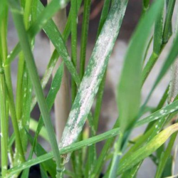

-
Camilinha

Mais encontrado em lavouras de
Milho, soja, cana-de-açúcar
-
Caruru

Mais encontrado em lavouras de
Milho, soja, algodão
-
Carrapixo

Mais encontrado em lavouras de
Soja, milho, algodão
-
Buva

Mais encontrado em lavouras de
Soja, milho, trigo
-
Capim-amargoso

Mais encontrado em lavouras de
Soja, milho, algodão
-
Capim-colonião

Mais encontrado em lavouras de
Cana-de-açúcar, pastagens
-
Capim-massambará

Mais encontrado em lavouras de
Soja, milho, algodãos
-
Capim-pé-de-galinha

Mais encontrado em lavouras de
Soja, milho, algodão
-
Erva-de-bicho

Mais encontrado em lavouras de
Arroz, milho, soja
-
Fedegoso

Mais encontrado em lavouras de
Soja, milho, algodão
-
Corda-de-viola

Mais encontrado em lavouras de
Soja, milho, algodão
-
Picão-preto

Mais encontrado em lavouras de
Soja, milho, feijão
A saúde da sua lavoura é essencial para garantir uma colheita bem-sucedida. Para manter as culturas livres de pragas e doenças, é importante escolher o agrotóxico adequado. Cada tipo é projetado para combater problemas específicos, e a seleção correta depende do tipo de desafio enfrentado em suas culturas.
Aqui você poderá conseguir identificar de uma maneira prática indicando o problema específico e os possíveis controladores ou combatentes adequados.
SEÇÕES
IDENTIFIQUE A PLANTA DANINHA:
Herbicidas utilizados para controlar ervas daninhas e plantas indesejadas.
Exemplo: Glifosato, Atrazina, 2,4-D.
| Erva daninha | Combatente |
|---|---|
|
Camilinha (Commelina benghalensis) |
Atrazina |
|
Caruru (Amaranthus spp.) |
Atrazina |
|
Carrapicho (Xanthium strumarium) |
Dicamba |
|
Buva (Conyza bonariensis) |
Glifosato |
|
Capim-amargoso (Digitaria insularis) |
Glifosato |
|
Capim-colonião (Panicum maximum) |
Glifosato |
|
Capim-massambará (Cenchrus echinatus) |
Glifosato |
|
Capim-pé-de-galinha (Eleusine indica) |
Glifosato |
|
Erva-de-bicho (Polygonum hydropiper) |
Glifosato |
|
Fedegoso (Senna obtusifolia) |
Glifosato |
|
Corda-de-viola (Ipomoea purpurea) |
2,4-D |
|
Picão-preto (Bidens pilosa) |
2,4-D |
IDENTIFIQUE O INSETO:
-
Lagarta-do-cartucho

Mais encontrado em lavouras de
Milho, algodão, soja, arroz
-
Pulgão

Mais encontrado em lavouras de
Algodão, trigo, milho, batata
-
Mosca-branca
Mais encontrado em lavouras de
Algodão, tomate, batata, melão
-
Broca-do-café
Mais encontrado em lavouras de
Café, cacau
-
Percevejo-marrom
Mais encontrado em lavouras de
Soja, algodão, feijão
-
Cigarrinha-das-pastagens

Mais encontrado em lavouras de
Pastagens, milho
-
Traça-das-crucíferas
Mais encontrado em lavouras de
Couve, repolho, brócolis
-
Besouro japonês

Mais encontrado em lavouras de
Gramíneas, milho e arroz
-
Gorgulho do milho

Mais encontrado em lavouras de
Milho, grãos armazenados
-
Ácaro-rajado
Mais encontrado em lavouras de
Frutas, legumes, algodão
Inseticidas utilizados para controlar insetos que podem danificar as culturas.
Exemplo: Imidacloprido, Clorpirifós, Permetrina.
| Insetos | Combatente |
|---|---|
|
Lagarta-do-cartucho (Spodoptera frugiperda) |
Clorantraniliprole, Espinetoram |
|
Pulgão (Aphididae) |
Imidacloprida, Acetamiprida |
|
Mosca-branca (Bemisia tabaci) |
Buprofezina, Espirotetramato |
|
Broca-do-café (Hypothenemus hampei) |
Endossulfano, Clorpirifós |
|
Percevejo-marrom (Euschistus heros) |
Lambda-cialotrina, Metaflumizona |
|
Cigarrinha-das-pastagens (Deois flavopicta) |
Fipronil, Tiametoxam |
|
Traça-das-crucíferas (Plutella xylostella) |
Indoxacarbe, Bacillus thuringiensis (Bt) |
|
Besouro japonês (Popillia japonica) |
Carbaryl, Neem Oil (óleo de neem) |
|
Gorgulho do milho (Sitophilus zeamais) |
Fosfina, Deltametrina |
|
Ácaro-rajado (Tetranychus urticae) |
Abamectina, Bifenazato |
IDENTIFIQUE O FUNGO:
-
Ferrugem Asiática da Soja

Mais encontrado em lavouras de
Soja
-
Oídio
Mais encontrado em lavouras de
Uva, citros, maçã, outras frutas e hortaliças
-
Mancha-alvo

Mais encontrado em lavouras de
Citros, feijão, algodão
-
Podridão-branca

Mais encontrado em lavouras de
Feijão, algodão, soja, hortaliças
-
Ferrugem do Café
Mais encontrado em lavouras de
Café
-
Antracnose

Mais encontrado em lavouras de
Feijão, milho, citros, manga
-
Mofo-branco
Mais encontrado em lavouras de
Feijão, batata, tomate, outras hortaliças
-
Mancha Parda

Mais encontrado em lavouras de
Maçã, pera, amêndoa, outras frutas
-
Fusariose
Mais encontrado em lavouras de
Trigo, milho, tomate, outras plantas
Fungicidas utilizados para controlar fungos e doenças fúngicas em plantas.
Exemplo: Mancozeb, Tebuconazol, Clorotalonil.
| Fungo / Doença Fúngica | Combatente |
|---|---|
|
Ferrugem Asiática da Soja (Phakopsora pachyrhizi) |
Triazóis, Estrobilurinas |
|
Oídio (Blumeria graminis) |
Enxofre, Triazóis |
|
Mancha-alvo (Corynespora cassiicola) |
Estrobilurinas, Triazóis |
|
Podridão-branca (Sclerotinia sclerotiorum) |
Tiofanato-metílico, Carboxamidas |
|
Ferrugem do Café (Hemileia vastatrix) |
Ciproconazol, Propiconazol |
|
Antracnose (Colletotrichum spp.) |
Mancozebe, Clorotalonil |
|
Mofo-branco (Botrytis cinerea) |
Fluazinam, Tiofanato-metílico |
|
Mancha Parda (Alternaria spp.) |
Triazóis, Estrobilurinas |
|
Fusariose (Fusarium spp.) |
Tiofanato-metílico, Carbendazim |
IDENTIFIQUE A BACTÉRIA:
-
Mancha Bacteriana

Mais encontrado em lavouras de
Tomate, Pimentão, Citros, Repolho, Pepino
-
Pseudomonas

Mais encontrado em lavouras de
Tomate, Pimentão, Ervilha, Batata, Citros
-
Murcha Bacteriana

Mais encontrado em lavouras de
Batata, Tomate, Pimentão, Berinjela, Tabaco
-
Galha da Coroa

Mais encontrado em lavouras de
Tomate, Pimentão, Berinjela, Batata, Citros
-
Fogo Bacteriano

Mais encontrado em lavouras de
Macieira, Pera, Marmeleiro, Pêssego
Bactericidas utilizados para controlar bactérias que podem causar doenças nas plantas.
Exemplo: Sulfato de cobre, Estreptomicina.
| Bactéria | Combatente |
|---|---|
|
Mancha Bacteriana (Xanthomonas campestris) |
Cobre (Hidróxido de cobre, Oxicloreto de cobre) |
|
Pseudomonas (Pseudomonas syringae) |
Cobre, Estreptomicina |
|
Murcha Bacteriana (Ralstonia solanacearum) |
Cobre, Tetraciclina |
|
Galha da Coroa (Agrobacterium tumefaciens) |
Tetraciclina, Streptomycin |
|
Fogo Bacteriano (Erwinia amylovora) |
Cobre, Estreptomicina |
IDENTIFIQUE O ÁCARO:
-
Ácaro-rajado
Mais encontrado em lavouras de
Soja, morango, tomate, algodão, feijão, pimentão
-
Ácaro-branco
 (1).png)
Mais encontrado em lavouras de
Pimentão, pimentas, morango, algodão, tomate, batata
-
Ácaro-vermelho-da-macieira
.png)
Mais encontrado em lavouras de
Maçã, pera, ameixa, pêssego
-
Ácaro-da-leprose-dos-citros
.png)
Mais encontrado em lavouras de
Citros (laranja, limão, tangerina)
-
Ácaros-eriofídeos
.png)
Mais encontrado em lavouras de
Videiras (uva), macieiras, peras, pêssegos
Acaricidas utilizados para controlar ácaros que podem infestar as plantas.
Exemplo: Abamectina, Dicofol.
| Ácaro | Combatente |
|---|---|
|
Ácaro-rajado (Tetranychus urticae) |
Abamectina, Fenazaquina |
|
Ácaro-branco (Polyphagotarsonemus latus) |
Enxofre, Abamectina |
|
Ácaro-vermelho-da-macieira (Panonychus ulmi) |
Hexitiazox, Fenbutatin-óxido |
|
Ácaro-da-leprose-dos-citros (Brevipalpus phoenicis) |
Enxofre, Dicofol |
|
Ácaros-eriofídeos (Eriophyes spp.) |
Enxofre, Clorpirifós |